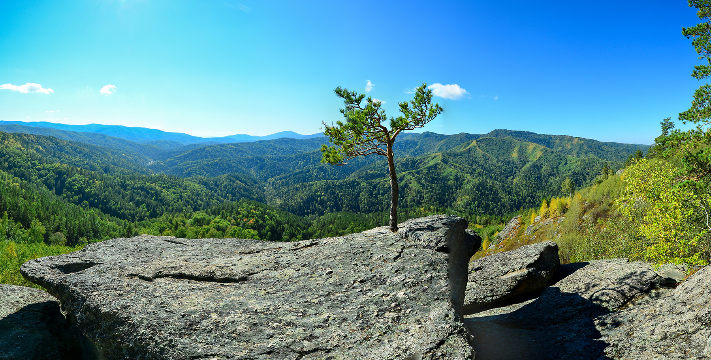

Отдых в Белокурихе
Чем заняться у нас на отдыхе?
Выбирайте настроение дня: спокойные практики, путешествия по Алтаю, отдых у воды или насыщенная вечерняя программа.

Ментальные практики
Медитации, йога и телесные практики помогают замедлиться, восстановить внутренний баланс и по-настоящему переключиться.
Восстановить баланс
Экскурсии
Путешествия по красивым местам Белокурихи и Горного Алтая.

Детская анимация
Игры, творчество и новые впечатления каждый день.

Вечерний досуг
Концерты, кино, караоке и встречи для гостей любого возраста.

СПА и бассейны
Тёплая вода, уход и спокойный отдых после насыщенного дня.

Природа
Терренкуры, горные пейзажи и чистый алтайский воздух.
Интерактивная дизайн-концепция · наведите курсор на карточкуИсходные фотографии и направления сохранены